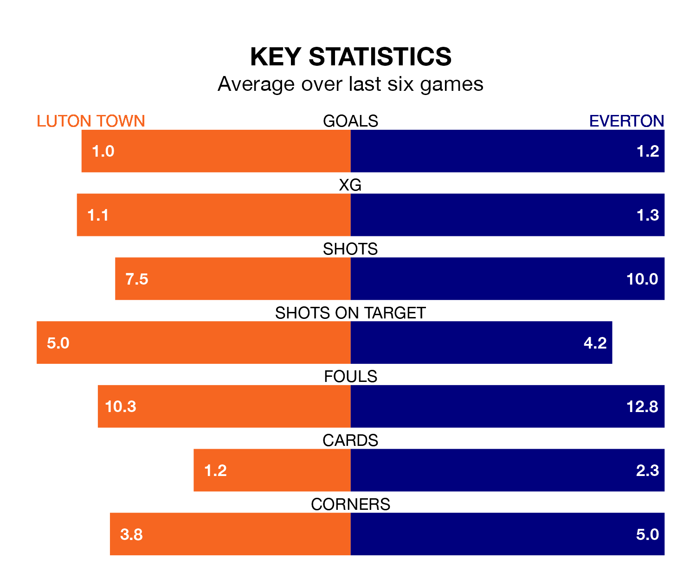

Everton visit Luton Town at Kenilworth Road on late Friday on the back of three consecutive wins in the Premier League.
Everton have picked up 13 points from their last six games, and they face a Hatters side who have lost their last three matches, and collected three points from the last possible 18.
In Jordan Pickford, Everton can rely on one of the league's safest pair of hands. He has kept 12 clean sheets in his 35 appearances this season, and only one other 'keeper – Arsenal's David Raya – has been able to prevent the opposition scoring on more occasions in the Premier League.
In Luton's net, Thomas Kaminski has two clean sheets in 35 games. He has conceded a goal every 44 minutes, 70% more often than the 75 minutes between goals for Pickford.
Town are 18th in the table after 35 games, of which they have won six and drawn seven, earning 25 points.
The Toffees are five places ahead of the Hatters in 13th, with 12 wins and eight draws putting them on 44 points.
With 37 goals in 35 games so far this season, the visitors are the league's second-lowest scorers with 1.1 goals per game. But they are conceding fewer than average too, letting in 48 goals at a rate of 1.4 per game.
The home side are also below average scorers, with 1.4 goals per game, compared to a league average of 1.6. They have conceded 2.2 goals per game.
Over the last two years, Luton and Everton have played each other twice. Luton won both of them.
Their last meeting was on January 27, when Luton won 2-1 away.
Luton's last match was on Saturday, a 2-1 loss against Wolverhampton Wanderers, with Carlton Morris getting the goal for the Hatters.
Everton beat Brentford 1-0 last time out, also on Saturday, with Idrissa Gueye on the scoresheet.
Friday's match will be refereed by Tim Robinson, who has taken charge of 20 Premier League games so far this season, issuing no red cards and booking 85 players. He has awarded five penalties.
The last Luton game Robinson refereed was a 2-1 home loss to Manchester City on December 10. His last Everton match was their 3-0 win at home against Newcastle United on December 7.
Updated: 12:00 (UTC), 02/05/24